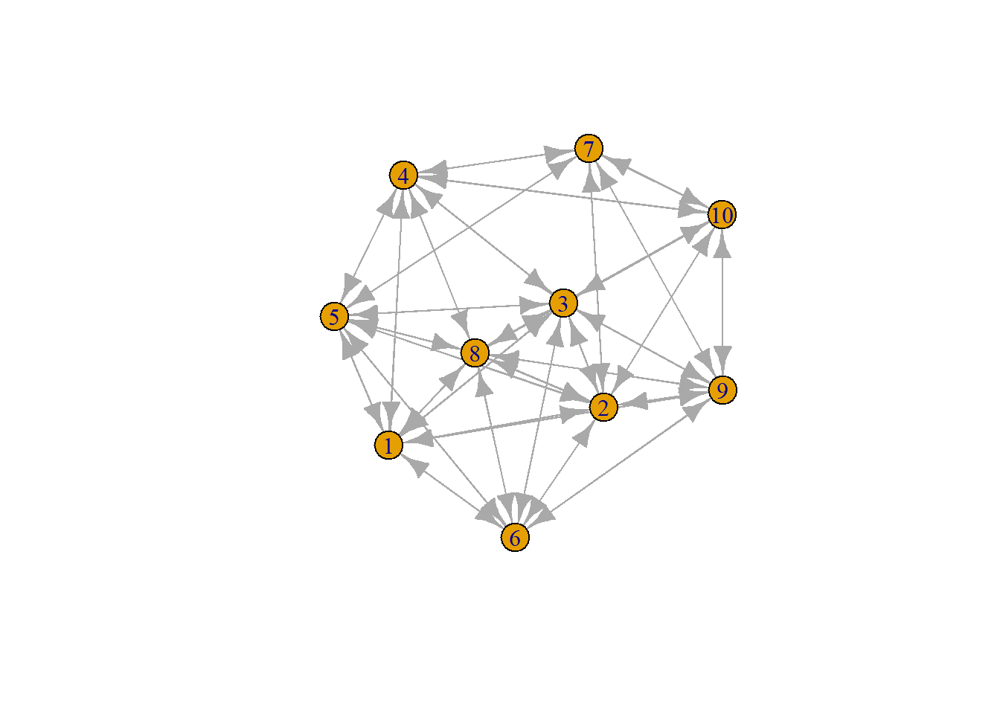

Last compiled on september, 2025
Project week 2
Introduction and research
questions?
Interdisciplinary collaboration has become increasingly recognized as
vital for advancing knowledge and addressing complex social phenomena.
While the growing specialization of disciplines fosters depth, it often
risks fragmentation and limits broader understanding, making
cross-disciplinary linkages essential (Leahey et al., 2017). Recent
research highlights that interdisciplinarity can be observed not only
across subject categories but also at the scholar level, where
collaborative practices and citation patterns reveal new forms of
knowledge integration (Zheng et al., 2023). Moreover, network analyses
show that interdisciplinary ties strengthen collaboration structures,
reduce dependence on gatekeepers, and increase reciprocity among
scholars (Haines, Godley, & Hawe, 2010). Against this backdrop, my
study examines interdisciplinary collaboration specifically between the
political science and sociology departments in the Netherlands,
exploring both its extent and its evolution over time. By adopting a
social network perspective, this study provides insights into how
interdepartmental collaboration shapes network structures and researcher
positions, offering a more nuanced understanding of interdisciplinarity
within the social sciences.
RQ1: To what extent does interdisciplinary collaboration takes place
between the political science department and the sociology
department?
RQ2: Has the extend in which interdisciplinary collaboration takes
place changed over time?
RQ3: To what extent is interdisciplinary collaboration driven by
similarity in research topics (selection process)
RQ4: How do inter-department ties affect the overall network
structure (density, clustering, centralization)
Or
RQ4: How does inter-department collaboration effect the researchers
position in the network. (centrality, brokerage, etc.)
Type of data
needed
actor characteristics
- Department (e.g., Political Science / Sociology)
- Research topics (for RQ3)
- Career success indicators such as citations (for RQ4b)
tie characteristics
- Collaboration (e.g., co-authorship)
- Each tie should be coded as intra-department
vs. inter-department
- Collaboration ties over the years
- Collaboration based on co-authorship with topic similarity
scores
Relevent
literature
Haines et at (2010) in their study looked at how interdisciplinary
collaborations can be understood as social networks. They use the case
of the International Collaboration Complex Interventions which is a
group of 19 scholars with 9 different disciplines, from 4 countries
spread out over 10 institutions. The aim of the study is to see how the
relationships among members changed over 18 months of collaboration. It
was a complete network as all 19 ICCI members were included. The data
collection was done at two timepoints, at the beginning and end of the
18 month time period. 13 different types of ties were measured Email
contact, meeting professionally outside ICCI, visiting each other’s
institution, citing one another’s work, submitting grants together,
working on research projects/papers/chapters, co-teaching or
co-presenting, helping with students/trainees, co-organizing workshops,
etc. For the analysis they made visualizations for all 13 networks (one
for each type of tie) at time point 0 and 1. Second they did an analysis
of properties of all thirteen networks and actors’ positions in these
networks. Network level properties: density, reciprocity, betweenness
centralization, cliques. Actor level properties: betweenness centrality,
how often an actor lies on the shortest path between two others (their
brokerage/gatekeeping role) and Subgroup membership, how many cliques
each person belonged to. Their findings show that network density
increased significantly, especially in the key ties. Reciprocity
increased, meaning members were more likely to cite or work with those
who reciprocated. Betweenness centralization declined slightly, showing
that dependence on one or two “gatekeepers” decreased as more ties
formed directly. And at last did More subgroups (cliques) emerge over
time, suggesting richer collaboration structures.
Zhen et al. (2023) examine whether interdisciplinarity in social
networking sites (SNS) research influences later academic impact. Unlike
many earlier studies that looked at journals or institutions, this study
focuses on individual scholars and their positions in citation networks.
The data consisted out of 2489 articles retrieved from the web of
science 2014-2016. The actors are the authors and ties the co citation.
To measure later academic impact the citation count of those 611 authors
was used, based on articles from 2017-2019. For the analysis clustering
within the co-citation network revealed four main sub-disciplines of SNS
research (network theory, health behavior, political participation,
youth & SNS use). Interdisciplinarity was measured through
betweenness centrality, the ability of an author to bridge different
knowledge clusters. And second constraint, how restricted an author is
by tightly knit ties. Their findings show that authors bridging across
different clusters received more citations in the following 3 years.
Constraint did not matter, less constraint didn’t predict citation
impact. And at last that Citation practices reveal cross-disciplinary
linkages that don’t always align with formal subject categories. However
I’ll be studying organizational interdisciplinarity, not citation-based
interdisciplinarity.
References
Haines, V. A., Godley, J., & Hawe, P. (2010). Understanding
interdisciplinary collaborations as social networks. American
Journal of Community Psychology, 47(1–2), 1–11. https://doi.org/10.1007/s10464-010-9374-1
Guerreiro, J. A. (2016, May). Interdisciplinary research in social
sciences: A two-way process. In Proceedings of the International
Congress on Interdisciplinarity in Social and Human Sciences
(pp. 209–213).
Zheng, J., Zhang, K., Han, B., & Hou, J. (2023). Research
Interdisciplinarity and Citation Impact: A network analysis of social
networking sites research. SAGE Open, 13(3). https://doi.org/10.1177/21582440231193472
Some crazy R shit from
class
Mymatrix2 <- matrix(0, nrow = 10, ncol = 10)
Mymatrix2
#> [,1] [,2] [,3] [,4] [,5] [,6] [,7] [,8] [,9] [,10]
#> [1,] 0 0 0 0 0 0 0 0 0 0
#> [2,] 0 0 0 0 0 0 0 0 0 0
#> [3,] 0 0 0 0 0 0 0 0 0 0
#> [4,] 0 0 0 0 0 0 0 0 0 0
#> [5,] 0 0 0 0 0 0 0 0 0 0
#> [6,] 0 0 0 0 0 0 0 0 0 0
#> [7,] 0 0 0 0 0 0 0 0 0 0
#> [8,] 0 0 0 0 0 0 0 0 0 0
#> [9,] 0 0 0 0 0 0 0 0 0 0
#> [10,] 0 0 0 0 0 0 0 0 0 0
Mymatrix4 <- matrix(sample(c(0, 1), size = 16, replace = TRUE), nrow = 4, ncol = 4)
Mymatrix4
#> [,1] [,2] [,3] [,4]
#> [1,] 0 0 0 1
#> [2,] 0 0 1 0
#> [3,] 1 1 1 0
#> [4,] 0 0 1 0
# grootte van de matrix
n <- 4
# random waarden (0 of 1 met gelijke kans)
Mymatrix5 <- matrix(sample(c(0,1), size = n*n, replace = TRUE), nrow = n, ncol = n)
# diagonaal op 0 zetten
diag(Mymatrix5) <- 0
Mymatrix5
#> [,1] [,2] [,3] [,4]
#> [1,] 0 1 1 0
#> [2,] 1 0 1 1
#> [3,] 1 0 0 0
#> [4,] 0 0 1 0
TransposeMymatrix5 <- t(Mymatrix5)
TransposeMymatrix5
#> [,1] [,2] [,3] [,4]
#> [1,] 0 1 1 0
#> [2,] 1 0 0 0
#> [3,] 1 1 0 1
#> [4,] 0 1 0 0
Mymatrix5[upper.tri(Mymatrix5)] <- TransposeMymatrix5[upper.tri(TransposeMymatrix5)]
Mymatrix5
#> [,1] [,2] [,3] [,4]
#> [1,] 0 1 1 0
#> [2,] 1 0 0 0
#> [3,] 1 0 0 1
#> [4,] 0 0 1 0
require("igraph")
Mymatrix6 <- matrix(sample(c(0: 1), size = 100, replace = TRUE), nrow = 10, ncol = 10)
Mymatrix6
#> [,1] [,2] [,3] [,4] [,5] [,6] [,7] [,8] [,9] [,10]
#> [1,] 1 1 1 1 0 0 0 0 0 0
#> [2,] 1 1 1 0 1 1 1 1 0 1
#> [3,] 1 1 0 1 1 0 0 1 0 0
#> [4,] 0 0 0 1 1 0 1 0 0 0
#> [5,] 1 1 1 0 1 1 0 1 0 0
#> [6,] 1 0 1 0 1 0 0 0 1 0
#> [7,] 0 0 0 1 1 0 1 0 1 1
#> [8,] 1 0 0 1 0 1 0 0 1 0
#> [9,] 1 1 1 0 0 0 0 1 0 1
#> [10,] 0 0 1 1 0 0 0 1 0 0
net_un6 <- Mymatrix6 + t(Mymatrix6)
net_un6 [net_un6 ==2] <- 1
diag(net_un6) <- 0
net_un6
#> [,1] [,2] [,3] [,4] [,5] [,6] [,7] [,8] [,9] [,10]
#> [1,] 0 1 1 1 1 1 0 1 1 0
#> [2,] 1 0 1 0 1 1 1 1 1 1
#> [3,] 1 1 0 1 1 1 0 1 1 1
#> [4,] 1 0 1 0 1 0 1 1 0 1
#> [5,] 1 1 1 1 0 1 1 1 0 0
#> [6,] 1 1 1 0 1 0 0 1 1 0
#> [7,] 0 1 0 1 1 0 0 0 1 1
#> [8,] 1 1 1 1 1 1 0 0 1 1
#> [9,] 1 1 1 0 0 1 1 1 0 1
#> [10,] 0 1 1 1 0 0 1 1 1 0
netG <- graph_from_adjacency_matrix(net_un6)
class(netG)
#> [1] "igraph"
plot(netG)

igraph::transitivity(netG, type = "undirected")
#> [1] 0.7425743
# dyad census
dyad_census(netG)
#> $mut
#> [1] 34
#>
#> $asym
#> [1] 0
#>
#> $null
#> [1] 11
# tryad census
triad_census(netG)
#> [1] 0 0 18 0 0 0 0 0 0 0 52 0 0 0 0 50
LS0tDQp0aXRsZTogIkpvdXJuYWwgd2VlayAyIg0KI2JpYmxpb2dyYXBoeTogcmVmZXJlbmNlcy5iaWINCmF1dGhvcjogIkhhbm5lIFdvbHRodWlzIg0KLS0tDQoNCg0KDQpgYGB7ciwgZ2xvYmFsc2V0dGluZ3MsIGVjaG89RkFMU0UsIHdhcm5pbmc9RkFMU0UsIHJlc3VsdHM9J2hpZGUnfQ0KbGlicmFyeShrbml0cikNCg0Ka25pdHI6Om9wdHNfY2h1bmskc2V0KGVjaG8gPSBUUlVFKQ0Kb3B0c19jaHVuayRzZXQodGlkeS5vcHRzPWxpc3Qod2lkdGguY3V0b2ZmPTEwMCksdGlkeT1UUlVFLCB3YXJuaW5nID0gRkFMU0UsIG1lc3NhZ2UgPSBGQUxTRSxjb21tZW50ID0gIiM+IiwgY2FjaGU9VFJVRSwgY2xhc3Muc291cmNlPWMoInRlc3QiKSwgY2xhc3Mub3V0cHV0PWMoInRlc3QyIikpDQpvcHRpb25zKHdpZHRoID0gMTAwKQ0KcmdsOjpzZXR1cEtuaXRyKCkNCg0KDQoNCmNvbG9yaXplIDwtIGZ1bmN0aW9uKHgsIGNvbG9yKSB7c3ByaW50ZigiPHNwYW4gc3R5bGU9J2NvbG9yOiAlczsnPiVzPC9zcGFuPiIsIGNvbG9yLCB4KSB9DQoNCmBgYA0KDQpgYGB7ciBrbGlwcHksIGVjaG89RkFMU0UsIGV2YWwgPSBGQUxTRSwgaW5jbHVkZT1UUlVFfQ0Ka2xpcHB5OjprbGlwcHkocG9zaXRpb24gPSBjKCd0b3AnLCAncmlnaHQnKSkNCiNrbGlwcHk6OmtsaXBweShjb2xvciA9ICdkYXJrcmVkJykNCiNrbGlwcHk6OmtsaXBweSh0b29sdGlwX21lc3NhZ2UgPSAnQ2xpY2sgdG8gY29weScsIHRvb2x0aXBfc3VjY2VzcyA9ICdEb25lJykNCmBgYA0KDQpMYXN0IGNvbXBpbGVkIG9uIGByIGZvcm1hdChTeXMudGltZSgpLCAnJUIsICVZJylgDQoNCjxicj4NCg0KICANCi0tLS0NCg0KIyBQcm9qZWN0IHdlZWsgMg0KICANCg0KYHIgY29sb3JpemUoIioqSW50cm9kdWN0aW9uIGFuZCByZXNlYXJjaCBxdWVzdGlvbnM/KioiLCAib3JhbmdlIilgDQoNCkludGVyZGlzY2lwbGluYXJ5IGNvbGxhYm9yYXRpb24gaGFzIGJlY29tZSBpbmNyZWFzaW5nbHkgcmVjb2duaXplZCBhcyB2aXRhbCBmb3IgYWR2YW5jaW5nIGtub3dsZWRnZSBhbmQgYWRkcmVzc2luZyBjb21wbGV4IHNvY2lhbCBwaGVub21lbmEuIFdoaWxlIHRoZSBncm93aW5nIHNwZWNpYWxpemF0aW9uIG9mIGRpc2NpcGxpbmVzIGZvc3RlcnMgZGVwdGgsIGl0IG9mdGVuIHJpc2tzIGZyYWdtZW50YXRpb24gYW5kIGxpbWl0cyBicm9hZGVyIHVuZGVyc3RhbmRpbmcsIG1ha2luZyBjcm9zcy1kaXNjaXBsaW5hcnkgbGlua2FnZXMgZXNzZW50aWFsIChMZWFoZXkgZXQgYWwuLCAyMDE3KS4gUmVjZW50IHJlc2VhcmNoIGhpZ2hsaWdodHMgdGhhdCBpbnRlcmRpc2NpcGxpbmFyaXR5IGNhbiBiZSBvYnNlcnZlZCBub3Qgb25seSBhY3Jvc3Mgc3ViamVjdCBjYXRlZ29yaWVzIGJ1dCBhbHNvIGF0IHRoZSBzY2hvbGFyIGxldmVsLCB3aGVyZSBjb2xsYWJvcmF0aXZlIHByYWN0aWNlcyBhbmQgY2l0YXRpb24gcGF0dGVybnMgcmV2ZWFsIG5ldyBmb3JtcyBvZiBrbm93bGVkZ2UgaW50ZWdyYXRpb24gKFpoZW5nIGV0IGFsLiwgMjAyMykuIE1vcmVvdmVyLCBuZXR3b3JrIGFuYWx5c2VzIHNob3cgdGhhdCBpbnRlcmRpc2NpcGxpbmFyeSB0aWVzIHN0cmVuZ3RoZW4gY29sbGFib3JhdGlvbiBzdHJ1Y3R1cmVzLCByZWR1Y2UgZGVwZW5kZW5jZSBvbiBnYXRla2VlcGVycywgYW5kIGluY3JlYXNlIHJlY2lwcm9jaXR5IGFtb25nIHNjaG9sYXJzIChIYWluZXMsIEdvZGxleSwgJiBIYXdlLCAyMDEwKS4gQWdhaW5zdCB0aGlzIGJhY2tkcm9wLCBteSBzdHVkeSBleGFtaW5lcyBpbnRlcmRpc2NpcGxpbmFyeSBjb2xsYWJvcmF0aW9uIHNwZWNpZmljYWxseSBiZXR3ZWVuIHRoZSBwb2xpdGljYWwgc2NpZW5jZSBhbmQgc29jaW9sb2d5IGRlcGFydG1lbnRzIGluIHRoZSBOZXRoZXJsYW5kcywgZXhwbG9yaW5nIGJvdGggaXRzIGV4dGVudCBhbmQgaXRzIGV2b2x1dGlvbiBvdmVyIHRpbWUuIEJ5IGFkb3B0aW5nIGEgc29jaWFsIG5ldHdvcmsgcGVyc3BlY3RpdmUsIHRoaXMgc3R1ZHkgcHJvdmlkZXMgaW5zaWdodHMgaW50byBob3cgaW50ZXJkZXBhcnRtZW50YWwgY29sbGFib3JhdGlvbiBzaGFwZXMgbmV0d29yayBzdHJ1Y3R1cmVzIGFuZCByZXNlYXJjaGVyIHBvc2l0aW9ucywgb2ZmZXJpbmcgYSBtb3JlIG51YW5jZWQgdW5kZXJzdGFuZGluZyBvZiBpbnRlcmRpc2NpcGxpbmFyaXR5IHdpdGhpbiB0aGUgc29jaWFsIHNjaWVuY2VzLg0KDQpSUTE6IFRvIHdoYXQgZXh0ZW50IGRvZXMgaW50ZXJkaXNjaXBsaW5hcnkgY29sbGFib3JhdGlvbiB0YWtlcyBwbGFjZSBiZXR3ZWVuIHRoZSBwb2xpdGljYWwgc2NpZW5jZSBkZXBhcnRtZW50IGFuZCB0aGUgc29jaW9sb2d5IGRlcGFydG1lbnQ/DQoNClJRMjogSGFzIHRoZSBleHRlbmQgaW4gd2hpY2ggaW50ZXJkaXNjaXBsaW5hcnkgY29sbGFib3JhdGlvbiB0YWtlcyBwbGFjZSBjaGFuZ2VkIG92ZXIgdGltZT8NCg0KUlEzOiBUbyB3aGF0IGV4dGVudCBpcyBpbnRlcmRpc2NpcGxpbmFyeSBjb2xsYWJvcmF0aW9uIGRyaXZlbiBieSBzaW1pbGFyaXR5IGluIHJlc2VhcmNoIHRvcGljcyAoc2VsZWN0aW9uIHByb2Nlc3MpDQoNClJRNDogSG93IGRvIGludGVyLWRlcGFydG1lbnQgdGllcyBhZmZlY3QgdGhlIG92ZXJhbGwgbmV0d29yayBzdHJ1Y3R1cmUgKGRlbnNpdHksIGNsdXN0ZXJpbmcsIGNlbnRyYWxpemF0aW9uKQ0KDQpPciANCg0KUlE0OiBIb3cgZG9lcyBpbnRlci1kZXBhcnRtZW50IGNvbGxhYm9yYXRpb24gZWZmZWN0IHRoZSByZXNlYXJjaGVycyBwb3NpdGlvbiBpbiB0aGUgbmV0d29yay4gKGNlbnRyYWxpdHksIGJyb2tlcmFnZSwgZXRjLikNCg0KDQpgciBjb2xvcml6ZSgiKipUeXBlIG9mIGRhdGEgbmVlZGVkKioiLCAib3JhbmdlIilgDQoNCmFjdG9yIGNoYXJhY3RlcmlzdGljcyANCg0KLSBEZXBhcnRtZW50IChlLmcuLCBQb2xpdGljYWwgU2NpZW5jZSAvIFNvY2lvbG9neSkgIA0KLSBSZXNlYXJjaCB0b3BpY3MgKGZvciBSUTMpICANCi0gQ2FyZWVyIHN1Y2Nlc3MgaW5kaWNhdG9ycyBzdWNoIGFzIGNpdGF0aW9ucyAoZm9yIFJRNGIpICANCg0KdGllIGNoYXJhY3RlcmlzdGljcyANCg0KLSBDb2xsYWJvcmF0aW9uIChlLmcuLCBjby1hdXRob3JzaGlwKSAgDQogIC0gRWFjaCB0aWUgc2hvdWxkIGJlIGNvZGVkIGFzIGludHJhLWRlcGFydG1lbnQgdnMuIGludGVyLWRlcGFydG1lbnQgIA0KLSBDb2xsYWJvcmF0aW9uIHRpZXMgb3ZlciB0aGUgeWVhcnMgIA0KLSBDb2xsYWJvcmF0aW9uIGJhc2VkIG9uIGNvLWF1dGhvcnNoaXAgd2l0aCB0b3BpYyBzaW1pbGFyaXR5IHNjb3JlcyAgDQoNCg0KYHIgY29sb3JpemUoIioqUmVsZXZlbnQgbGl0ZXJhdHVyZSoqIiwgIm9yYW5nZSIpYA0KDQpIYWluZXMgZXQgYXQgKDIwMTApIGluIHRoZWlyIHN0dWR5IGxvb2tlZCBhdCBob3cgaW50ZXJkaXNjaXBsaW5hcnkgY29sbGFib3JhdGlvbnMgY2FuIGJlIHVuZGVyc3Rvb2QgYXMgc29jaWFsIG5ldHdvcmtzLiBUaGV5IHVzZSB0aGUgY2FzZSBvZiB0aGUgSW50ZXJuYXRpb25hbCBDb2xsYWJvcmF0aW9uIENvbXBsZXggSW50ZXJ2ZW50aW9ucyB3aGljaCBpcyBhIGdyb3VwIG9mIDE5IHNjaG9sYXJzIHdpdGggOSBkaWZmZXJlbnQgZGlzY2lwbGluZXMsIGZyb20gNCBjb3VudHJpZXMgc3ByZWFkIG91dCBvdmVyIDEwIGluc3RpdHV0aW9ucy4gVGhlIGFpbSBvZiB0aGUgc3R1ZHkgaXMgdG8gc2VlIGhvdyB0aGUgcmVsYXRpb25zaGlwcyBhbW9uZyBtZW1iZXJzIGNoYW5nZWQgb3ZlciAxOCBtb250aHMgb2YgY29sbGFib3JhdGlvbi4gSXQgd2FzIGEgY29tcGxldGUgbmV0d29yayBhcyBhbGwgMTkgSUNDSSBtZW1iZXJzIHdlcmUgaW5jbHVkZWQuIFRoZSBkYXRhIGNvbGxlY3Rpb24gd2FzIGRvbmUgYXQgdHdvIHRpbWVwb2ludHMsIGF0IHRoZSBiZWdpbm5pbmcgYW5kIGVuZCBvZiB0aGUgMTggbW9udGggdGltZSBwZXJpb2QuIDEzIGRpZmZlcmVudCB0eXBlcyBvZiB0aWVzIHdlcmUgbWVhc3VyZWQgIEVtYWlsIGNvbnRhY3QsIG1lZXRpbmcgcHJvZmVzc2lvbmFsbHkgb3V0c2lkZSBJQ0NJLCB2aXNpdGluZyBlYWNoIG90aGVy4oCZcyBpbnN0aXR1dGlvbiwgY2l0aW5nIG9uZSBhbm90aGVy4oCZcyB3b3JrLCBzdWJtaXR0aW5nIGdyYW50cyB0b2dldGhlciwgd29ya2luZyBvbiByZXNlYXJjaCBwcm9qZWN0cy9wYXBlcnMvY2hhcHRlcnMsIGNvLXRlYWNoaW5nIG9yIGNvLXByZXNlbnRpbmcsIGhlbHBpbmcgd2l0aCBzdHVkZW50cy90cmFpbmVlcywgY28tb3JnYW5pemluZyB3b3Jrc2hvcHMsIGV0Yy4gRm9yIHRoZSBhbmFseXNpcyB0aGV5IG1hZGUgdmlzdWFsaXphdGlvbnMgZm9yIGFsbCAxMyBuZXR3b3JrcyAob25lIGZvciBlYWNoIHR5cGUgb2YgdGllKSBhdCB0aW1lIHBvaW50IDAgYW5kIDEuIFNlY29uZCB0aGV5IGRpZCBhbiBhbmFseXNpcyBvZiBwcm9wZXJ0aWVzIG9mIGFsbCB0aGlydGVlbiBuZXR3b3JrcyBhbmQgYWN0b3JzJyBwb3NpdGlvbnMgaW4gdGhlc2UgbmV0d29ya3MuIE5ldHdvcmsgbGV2ZWwgcHJvcGVydGllczogZGVuc2l0eSwgcmVjaXByb2NpdHksIGJldHdlZW5uZXNzIGNlbnRyYWxpemF0aW9uLCBjbGlxdWVzLiBBY3RvciBsZXZlbCBwcm9wZXJ0aWVzOiBiZXR3ZWVubmVzcyBjZW50cmFsaXR5LCBob3cgb2Z0ZW4gYW4gYWN0b3IgbGllcyBvbiB0aGUgc2hvcnRlc3QgcGF0aCBiZXR3ZWVuIHR3byBvdGhlcnMgKHRoZWlyIGJyb2tlcmFnZS9nYXRla2VlcGluZyByb2xlKSBhbmQgU3ViZ3JvdXAgbWVtYmVyc2hpcCwgaG93IG1hbnkgY2xpcXVlcyBlYWNoIHBlcnNvbiBiZWxvbmdlZCB0by4gDQpUaGVpciBmaW5kaW5ncyBzaG93IHRoYXQgbmV0d29yayBkZW5zaXR5IGluY3JlYXNlZCBzaWduaWZpY2FudGx5LCBlc3BlY2lhbGx5IGluIHRoZSBrZXkgdGllcy4gUmVjaXByb2NpdHkgaW5jcmVhc2VkLCBtZWFuaW5nIG1lbWJlcnMgd2VyZSBtb3JlIGxpa2VseSB0byBjaXRlIG9yIHdvcmsgd2l0aCB0aG9zZSB3aG8gcmVjaXByb2NhdGVkLiBCZXR3ZWVubmVzcyBjZW50cmFsaXphdGlvbiBkZWNsaW5lZCBzbGlnaHRseSwgc2hvd2luZyB0aGF0IGRlcGVuZGVuY2Ugb24gb25lIG9yIHR3byDigJxnYXRla2VlcGVyc+KAnSBkZWNyZWFzZWQgYXMgbW9yZSB0aWVzIGZvcm1lZCBkaXJlY3RseS4gQW5kIGF0IGxhc3QgZGlkIE1vcmUgc3ViZ3JvdXBzIChjbGlxdWVzKSBlbWVyZ2Ugb3ZlciB0aW1lLCBzdWdnZXN0aW5nIHJpY2hlciBjb2xsYWJvcmF0aW9uIHN0cnVjdHVyZXMuDQoNClpoZW4gZXQgYWwuICgyMDIzKSBleGFtaW5lIHdoZXRoZXIgaW50ZXJkaXNjaXBsaW5hcml0eSBpbiBzb2NpYWwgbmV0d29ya2luZyBzaXRlcyAoU05TKSByZXNlYXJjaCBpbmZsdWVuY2VzIGxhdGVyIGFjYWRlbWljIGltcGFjdC4gVW5saWtlIG1hbnkgZWFybGllciBzdHVkaWVzIHRoYXQgbG9va2VkIGF0IGpvdXJuYWxzIG9yIGluc3RpdHV0aW9ucywgdGhpcyBzdHVkeSBmb2N1c2VzIG9uIGluZGl2aWR1YWwgc2Nob2xhcnMgYW5kIHRoZWlyIHBvc2l0aW9ucyBpbiBjaXRhdGlvbiBuZXR3b3Jrcy4gDQpUaGUgZGF0YSBjb25zaXN0ZWQgb3V0IG9mIDI0ODkgYXJ0aWNsZXMgcmV0cmlldmVkIGZyb20gdGhlIHdlYiBvZiBzY2llbmNlIDIwMTQtMjAxNi4gVGhlIGFjdG9ycyBhcmUgdGhlIGF1dGhvcnMgYW5kIHRpZXMgdGhlIGNvIGNpdGF0aW9uLiBUbyBtZWFzdXJlICBsYXRlciBhY2FkZW1pYyBpbXBhY3QgdGhlIGNpdGF0aW9uIGNvdW50IG9mIHRob3NlIDYxMSBhdXRob3JzIHdhcyB1c2VkLCBiYXNlZCBvbiBhcnRpY2xlcyBmcm9tIDIwMTctMjAxOS4NCkZvciB0aGUgYW5hbHlzaXMgY2x1c3RlcmluZyB3aXRoaW4gdGhlIGNvLWNpdGF0aW9uIG5ldHdvcmsgcmV2ZWFsZWQgZm91ciBtYWluIHN1Yi1kaXNjaXBsaW5lcyBvZiBTTlMgcmVzZWFyY2ggKG5ldHdvcmsgdGhlb3J5LCBoZWFsdGggYmVoYXZpb3IsIHBvbGl0aWNhbCBwYXJ0aWNpcGF0aW9uLCB5b3V0aCAmIFNOUyB1c2UpLiBJbnRlcmRpc2NpcGxpbmFyaXR5IHdhcyBtZWFzdXJlZCB0aHJvdWdoIGJldHdlZW5uZXNzIGNlbnRyYWxpdHksIHRoZSBhYmlsaXR5IG9mIGFuIGF1dGhvciB0byBicmlkZ2UgZGlmZmVyZW50IGtub3dsZWRnZSBjbHVzdGVycy4gQW5kIHNlY29uZCBjb25zdHJhaW50LCBob3cgcmVzdHJpY3RlZCBhbiBhdXRob3IgaXMgYnkgdGlnaHRseSBrbml0IHRpZXMuIA0KVGhlaXIgZmluZGluZ3Mgc2hvdyB0aGF0IGF1dGhvcnMgYnJpZGdpbmcgYWNyb3NzIGRpZmZlcmVudCBjbHVzdGVycyByZWNlaXZlZCBtb3JlIGNpdGF0aW9ucyBpbiB0aGUgZm9sbG93aW5nIDMgeWVhcnMuIENvbnN0cmFpbnQgZGlkIG5vdCBtYXR0ZXIsIGxlc3MgY29uc3RyYWludCBkaWRu4oCZdCBwcmVkaWN0IGNpdGF0aW9uIGltcGFjdC4gQW5kIGF0IGxhc3QgdGhhdCBDaXRhdGlvbiBwcmFjdGljZXMgcmV2ZWFsIGNyb3NzLWRpc2NpcGxpbmFyeSBsaW5rYWdlcyB0aGF0IGRvbuKAmXQgYWx3YXlzIGFsaWduIHdpdGggZm9ybWFsIHN1YmplY3QgY2F0ZWdvcmllcy4gSG93ZXZlciBJ4oCZbGwgYmUgc3R1ZHlpbmcgb3JnYW5pemF0aW9uYWwgaW50ZXJkaXNjaXBsaW5hcml0eSwgbm90IGNpdGF0aW9uLWJhc2VkIGludGVyZGlzY2lwbGluYXJpdHkuDQoNCg0KIyBSZWZlcmVuY2VzDQoNCg0KSGFpbmVzLCBWLiBBLiwgR29kbGV5LCBKLiwgJiBIYXdlLCBQLiAoMjAxMCkuIFVuZGVyc3RhbmRpbmcgaW50ZXJkaXNjaXBsaW5hcnkgY29sbGFib3JhdGlvbnMgYXMgc29jaWFsIG5ldHdvcmtzLiAqQW1lcmljYW4gSm91cm5hbCBvZiBDb21tdW5pdHkgUHN5Y2hvbG9neSwgNDcqKDHigJMyKSwgMeKAkzExLiBodHRwczovL2RvaS5vcmcvMTAuMTAwNy9zMTA0NjQtMDEwLTkzNzQtMQ0KDQpHdWVycmVpcm8sIEouIEEuICgyMDE2LCBNYXkpLiBJbnRlcmRpc2NpcGxpbmFyeSByZXNlYXJjaCBpbiBzb2NpYWwgc2NpZW5jZXM6IEEgdHdvLXdheSBwcm9jZXNzLiBJbiAqUHJvY2VlZGluZ3Mgb2YgdGhlIEludGVybmF0aW9uYWwgQ29uZ3Jlc3Mgb24gSW50ZXJkaXNjaXBsaW5hcml0eSBpbiBTb2NpYWwgYW5kIEh1bWFuIFNjaWVuY2VzKiAocHAuIDIwOeKAkzIxMykuDQoNClpoZW5nLCBKLiwgWmhhbmcsIEsuLCBIYW4sIEIuLCAmIEhvdSwgSi4gKDIwMjMpLiBSZXNlYXJjaCBJbnRlcmRpc2NpcGxpbmFyaXR5IGFuZCBDaXRhdGlvbiBJbXBhY3Q6IEEgbmV0d29yayBhbmFseXNpcyBvZiBzb2NpYWwgbmV0d29ya2luZyBzaXRlcyByZXNlYXJjaC4gKlNBR0UgT3BlbiwgMTMqKDMpLiBodHRwczovL2RvaS5vcmcvMTAuMTE3Ny8yMTU4MjQ0MDIzMTE5MzQ3Mg0KDQoNCi0tLS0gDQoNCi0tLS0NCiMgU29tZSBjcmF6eSBSIHNoaXQgZnJvbSBjbGFzcw0KDQpgYGB7cn0NCk15bWF0cml4MiA8LSBtYXRyaXgoMCwgbnJvdyA9IDEwLCBuY29sID0gMTApDQpNeW1hdHJpeDINCmBgYA0KDQpgYGB7cn0NCk15bWF0cml4NCA8LSBtYXRyaXgoc2FtcGxlKGMoMCwgMSksIHNpemUgPSAxNiwgcmVwbGFjZSA9IFRSVUUpLCBucm93ID0gNCwgbmNvbCA9IDQpDQpNeW1hdHJpeDQNCmBgYA0KDQpgYGB7cn0NCiMgZ3Jvb3R0ZSB2YW4gZGUgbWF0cml4DQpuIDwtIDQgIA0KDQojIHJhbmRvbSB3YWFyZGVuICgwIG9mIDEgbWV0IGdlbGlqa2Uga2FucykNCk15bWF0cml4NSA8LSBtYXRyaXgoc2FtcGxlKGMoMCwxKSwgc2l6ZSA9IG4qbiwgcmVwbGFjZSA9IFRSVUUpLCBucm93ID0gbiwgbmNvbCA9IG4pDQoNCiMgZGlhZ29uYWFsIG9wIDAgemV0dGVuDQpkaWFnKE15bWF0cml4NSkgPC0gMCAgDQoNCk15bWF0cml4NQ0KYGBgDQoNCmBgYHtyfQ0KVHJhbnNwb3NlTXltYXRyaXg1IDwtIHQoTXltYXRyaXg1KQ0KVHJhbnNwb3NlTXltYXRyaXg1DQpgYGANCg0KYGBge3J9DQoNCk15bWF0cml4NVt1cHBlci50cmkoTXltYXRyaXg1KV0gPC0gVHJhbnNwb3NlTXltYXRyaXg1W3VwcGVyLnRyaShUcmFuc3Bvc2VNeW1hdHJpeDUpXQ0KTXltYXRyaXg1DQoNCmBgYCANCg0KYGBge3J9DQpyZXF1aXJlKCJpZ3JhcGgiKQ0KDQpNeW1hdHJpeDYgPC0gbWF0cml4KHNhbXBsZShjKDA6IDEpLCBzaXplID0gMTAwLCByZXBsYWNlID0gVFJVRSksIG5yb3cgPSAxMCwgbmNvbCA9IDEwKQ0KTXltYXRyaXg2DQoNCm5ldF91bjYgPC0gTXltYXRyaXg2ICsgdChNeW1hdHJpeDYpDQpuZXRfdW42IFtuZXRfdW42ID09Ml0gPC0gMQ0KZGlhZyhuZXRfdW42KSA8LSAwDQpuZXRfdW42DQpuZXRHIDwtIGdyYXBoX2Zyb21fYWRqYWNlbmN5X21hdHJpeChuZXRfdW42KQ0KY2xhc3MobmV0RykNCnBsb3QobmV0RykNCmlncmFwaDo6dHJhbnNpdGl2aXR5KG5ldEcsIHR5cGUgPSAidW5kaXJlY3RlZCIpDQoNCmBgYA0KDQpgYGB7cn0NCiMgZHlhZCBjZW5zdXMNCmR5YWRfY2Vuc3VzKG5ldEcpDQpgYGANCg0KYGBge3J9DQojIHRyeWFkIGNlbnN1cyANCnRyaWFkX2NlbnN1cyhuZXRHKQ0KYGBgDQoNCg0K